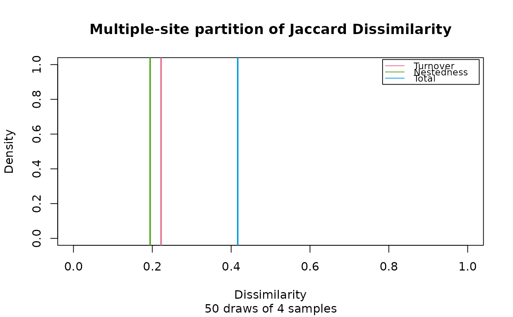

Baselga's multiple-site dissimilarity of a whole set of samples, and its
partition into turnover and nestedness (presence/absence) or balanced
variation and abundance gradients (abundances), as betapart's
beta.multi() and beta.multi.abund() compute them; and, with
n_sites, the same for random subsets of a fixed number of samples, as
beta.sample() and beta.sample.abund().
Usage
beta_partition_multi(
counts,
index = "sorensen",
margin = 1L,
norm = "none",
n_sites = NULL,
n_draws = 100L,
seed = 0L,
cpus = n_cpus()
)Arguments
- counts
A numeric matrix of count data (samples \(\times\) features). Values must not be negative.
- index
The family of dissimilarities, as betapart's
index.family:"sorensen"(the default) or"jaccard", of presence/absence, or"bray"(Bray-Curtis) or"ruzicka"("soergel"is accepted too), of abundances.- margin
The margin containing samples.
1if samples are rows,2if samples are columns. Ignored whencountsis a special object class (e.g.phyloseq). Default:1- norm
Only for
index = "bray"or"ruzicka". Normalize the incoming counts first:'none'(the default, as betapart),'percent'(relative abundances),'chord','hellinger'or'binary'.'clr','rclr'and'log'give negative values and are refused.- n_sites
NULL(the default) for the values of all the samples only; or a number of samples (at least 2, at most the number of samples) to draw, without replacement,n_drawstimes (betapart'ssites).- n_draws
How many random subsets of
n_sitessamples to draw (betapart'ssamples). Default:100.- seed
Random seed for the draws: any integer. Results are the same for a given seed, whatever
cpus.- cpus
How many parallel processing threads should be used. The default,
n_cpus(), is the CPU cores this R process may use, within any limits set on it. Results are the same for anycpus.
Value
A list of class ecodive_beta_partition_multi:
value: the three values of all the samples, namedturnover,nestednessandtotal(orbalanced,gradientandtotalfor the abundance indices).With
n_sites:draws, a matrix of the three values (columns) of each draw (rows); andmeanandsd, their means and standard deviations.
Attributes: index, the family; n_samples, the number of samples
behind value; and with n_sites, n_sites and n_draws.
Details
With \(N\) samples, \(S_i\) the number of features of sample \(i\), \(S_T\) the number of features of all the samples together, and \(b_{ij}\) the number of features in sample \(i\) but not in sample \(j\), Baselga (2010, 2012) defines, with sums over the pairs \(i < j\):
\(\beta_{SOR} = \frac{\sum \min(b_{ij}, b_{ji}) + \sum \max(b_{ij}, b_{ji})}{2(\sum_i S_i - S_T) + \sum \min(b_{ij}, b_{ji}) + \sum \max(b_{ij}, b_{ji})}\)
\(\beta_{SIM} = \frac{\sum \min(b_{ij}, b_{ji})}{\sum_i S_i - S_T + \sum \min(b_{ij}, b_{ji})}\), and \(\beta_{SNE} = \beta_{SOR} - \beta_{SIM}\)
\(\beta_{JAC} = \frac{\sum \min(b_{ij}, b_{ji}) + \sum \max(b_{ij}, b_{ji})}{\sum_i S_i - S_T + \sum \min(b_{ij}, b_{ji}) + \sum \max(b_{ij}, b_{ji})}\)
\(\beta_{JTU} = \frac{2 \sum \min(b_{ij}, b_{ji})}{\sum_i S_i - S_T + 2 \sum \min(b_{ij}, b_{ji})}\), and \(\beta_{JNE} = \beta_{JAC} - \beta_{JTU}\)
For abundances (Baselga 2017), \(b_{ij}\) is
\(B_{ij} = \sum_k \max(x_{ik} - x_{jk}, 0)\), and
\(\sum_i S_i - S_T\) is \(A = \sum_k (\sum_i x_{ik} - \max_i
x_{ik})\); the Bray-Curtis values then have the shapes of the Sorensen
ones, and the Ruzicka values those of the Jaccard ones. With two
samples, each value is the pairwise one (beta_partition()).
Multiple-site values depend on the number of samples: they grow as
samples are added, so sets of different sizes can't be compared
directly. n_sites draws subsets of the same size from each set, as
Baselga (2010) recommends, and the means (or the distributions) of the
draws can be compared instead.
Differences from betapart: draws use ecodive's own random number
generator (PCG; seed), not R's, so they differ from beta.sample()'s
while having the same distribution; the samples of each draw are taken
in their input order; sd is the standard deviation of the draws, as
sd.values; and the abundance indices can use relative abundances
(norm).
References
Baselga, A. (2010). Partitioning the turnover and nestedness components of beta diversity. Global Ecology and Biogeography, 19, 134-143. doi:10.1111/j.1466-8238.2009.00490.x
Baselga, A. (2012). The relationship between species replacement, dissimilarity derived from nestedness, and nestedness. Global Ecology and Biogeography, 21, 1223-1232. doi:10.1111/j.1466-8238.2011.00756.x
Baselga, A. (2017). Partitioning abundance-based multiple-site dissimilarity into components: balanced variation in abundance and abundance gradients. Methods in Ecology and Evolution, 8, 799-808. doi:10.1111/2041-210X.12693
See also
beta_partition() for every pair of samples.
Other Partitioned metrics:
beta_partition(),
bray_balanced(),
sorensen_turnover()
Examples
beta_partition_multi(ex_counts)
#> Multiple-site partition of Sorensen Dissimilarity: 4 samples
#>
#> Turnover 0.125
#> Nestedness 0.138
#> Total 0.263
# 50 draws of 4 samples.
bm <- beta_partition_multi(ex_counts, 'jaccard', n_sites = 4, n_draws = 50)
bm
#> Multiple-site partition of Jaccard Dissimilarity: 4 samples
#>
#> All samples 50 draws of 4: mean (sd)
#> Turnover 0.222 0.222 ( 0)
#> Nestedness 0.194 0.194 ( 0)
#> Total 0.417 0.417 ( 0)
plot(bm)
